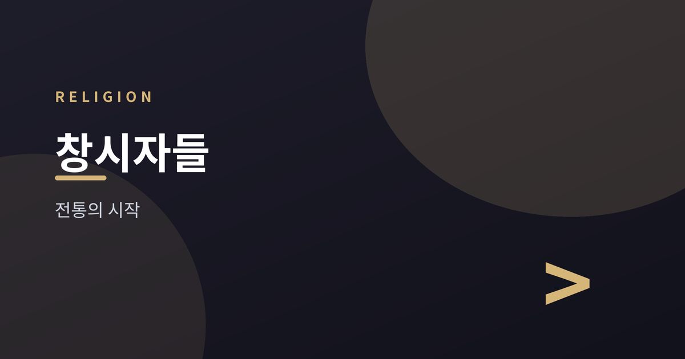
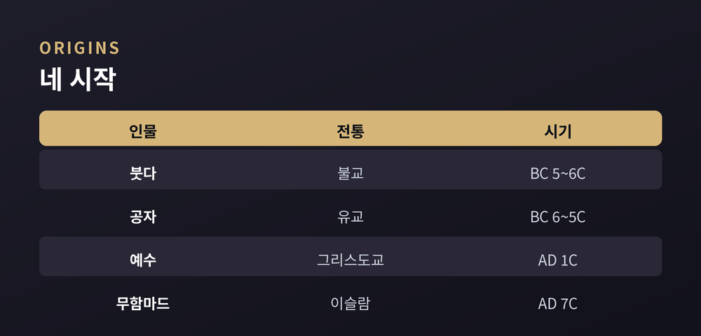
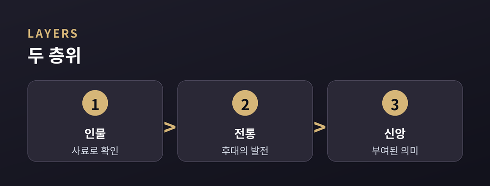

붓다·예수·무함마드·공자, 그리고 전통의 시작

이번 글에서는 세계 종교의 창시자들을 비교종교의 눈으로 살펴보겠습니다.
한 종교의 뿌리를 이야기할 때 우리는 흔히 한 인물을 떠올립니다. 하지만 '창시자'라는 말은 생각보다 단순하지 않습니다. 어떤 전통은 뚜렷한 한 사람에게서 시작되지만, 어떤 전통은 오랜 세월 여러 목소리가 쌓여 이루어졌습니다.
이 글은 어느 신앙이 옳거나 그르다고 말하지 않습니다. 역사적 인물과 신앙의 대상을 구분해, 각 전통의 시작을 설명하는 데 초점을 둡니다.
창시자의 모습은 전통마다 다릅니다. 한쪽 끝에는 시점과 인물이 비교적 뚜렷한 경우가 있습니다. 다른 쪽 끝에는 특정 창시자를 꼽기 어려운 경우가 있습니다.
힌두교가 대표적입니다. 한 사람이 세운 것이 아니라, 베다 전통과 여러 사상·의례가 수천 년에 걸쳐 흘러들며 형성됐습니다. 유대교 역시 아브라함·모세 같은 인물이 중심에 있지만, 오랜 역사 속에서 다듬어진 전통으로 봅니다.
그래서 종교학은 '창시자'를 하나의 정답이 아니라 정도의 문제로 다룹니다.
아래는 네 창시자를 간략히 정리한 것입니다. 연대와 지역은 학계의 일반적 견해를 따랐습니다.
| 인물 | 전통 | 대략의 시기 |
|---|---|---|
| 고타마 싯다르타(붓다) | 불교 | 기원전 5~6세기, 인도 |
| 공자 | 유교 | 기원전 6~5세기, 중국 |
| 예수 | 그리스도교 | 기원후 1세기, 유대 |
| 무함마드 | 이슬람 | 기원후 7세기, 아라비아 |

붓다는 삶의 괴로움과 그 벗어남을 이야기했고, 그 길을 여러 실천으로 제시했다고 전해집니다. 공자는 신에 대한 교리보다 사람 사이의 도리와 배움, 어진 마음을 강조한 사상가로 읽힙니다.
예수는 사랑과 용서를 가르쳤다고 복음서에 기록되며, 무함마드는 유일신 신앙과 계시의 전달자로 여겨집니다. 여기서 각 가르침의 '진위'를 판정하는 것은 이 글의 몫이 아닙니다.
창시자와 후대 전통이 늘 같지는 않습니다. 오늘날의 교리·제도·의례 상당수는 창시자 이후 여러 세대를 거치며 형성됐습니다. 그래서 "창시자가 이렇게 말했다"와 "전통이 이렇게 발전했다"는 구분해서 볼 필요가 있습니다.
또한 종교학은 '역사적 인물'과 '신앙의 대상'을 나눠 다룹니다. 역사가 다루는 것은 사료로 확인되는 부분이고, 신앙이 다루는 것은 그 인물에게 부여된 의미입니다. 두 층위는 서로 다른 질문에 답합니다.

이 구분을 기억하면, 서로 다른 전통을 우열이 아니라 각자의 맥락에서 이해하는 데 도움이 됩니다.